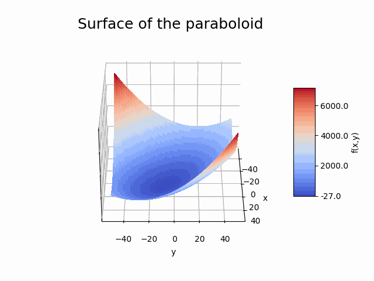

Simple component analysis
Contents
Simple component analysis#
{kind=link}
Duration: 10 min
In our first example we explore the creation and analysis of a simple analytical function component.
All you need to get started is a text editor and your web browser. No need to download or install anything! However, as we will use python for all our examples, a basic understanding of the python syntax will be beneficial, as well as a code editor that supports python (e.g. VS Code, PyCharm or other).
Component description#
The paraboloid component solves the function
where x and y are the component inputs and f(x,y) is the output. The minimum of this function is located at
Create the component#
Navigate to the dashboard and create a blank workspace by selecting New (if required).
Right-click in the workspace and select Add Empty Node.
This creates an empty template component in your workspace.
Select the component to edit it.
Properties#
The component interface opens on the Properties tab. This is where you define the core properties of your component.
Fill in a component name, paraboloid, and select the generic-python3-comp:latest component API.
Press the tab key or click within the component interface to validate the selected API. This triggers the display of a list of API input files, as shown below.

Note
Component Names should only contain lower case letters a-z, numbers 0-9 and dash (-), without spaces.
Warning
Clicking outside the component interface closes the component without saving changes.
We can see that the generic-python3-comp API has three input files:
setup.pycompute.pyrequirements.txt
The first two files are required and the last one is optional. You can inspect the paraboloid example file contents below.
The requirements.txt file is not required here as the python code doesn’t import any third-party python packages. We will use it in the Simple optimisation problem to import openMDAO classes and functions.
The setup.py module has to include a setup function that returns data that will be available to the compute function. Here we initialise x and y inputs with values from the Parameters input dictionary. We also initialise the outputs and partials (function gradients), which will only be needed for the next example.
The compute.py module has to include a compute function that returns a dictionary of data, which usually includes the component outputs dictionary. The compute function in this example calculates f(x,y) from the x and y values stored in the inputs dictionary. Again the partials calculation is only needed for the next example.
from datetime import datetime
from pathlib import Path
def setup(
inputs: dict = {"design": {}, "implicit": {}, "setup": {}},
outputs: dict = {"design": {}, "implicit": {}, "setup": {}},
parameters: dict = {
"user_input_files": [],
"inputs_folder_path": "",
"outputs_folder_path": "",
},
) -> dict:
"""A user editable setup function.
Parameters
----------
inputs: dict
The component Inputs sorted by type (design, implicit or setup).
outputs: dict
The component Outputs sorted by type (design, implicit or setup).
parameters: dict
The component Parameters as defined in the component 'Parameters' tab.
Includes the following special keys:
'user_input_files': list of user-uploaded input file filenames
'inputs_folder_path': path to all user and connection input files (str)
'outputs_folder_path': path to component outputs folder (str)
Returns
-------
dict
dictionary of JSON-serialisable keys and values, including:
inputs: dict, optional
The setup function can assign values to input keys, but the inputs
keys should not be modified.
outputs: dict, optional
The setup function can assign values to output keys, but the outputs
keys should not be modified.
parameters: dict, optional
The setup function can add key/value pairs to the parameters dict,
but the existing key/value pairs cannot be modified.
partials: dict, optional
The derivatives of the component's "design" outputs with respect to its
"design" inputs, used for gradient-based design optimisation Runs.
message: str, optional
A setup message that will appear in the Run log.
"""
response = {}
# set default inputs
if inputs:
for input_key, input_value in inputs["design"].items():
if input_value == "default":
try:
inputs["design"][input_key] = float(parameters[input_key])
except Exception as e:
print(f"Could not find {input_key} in the input parameters.")
response["inputs"] = inputs
# initialise outputs - required for OpenMDAO
if outputs:
for output_key, output_value in outputs["design"].items():
if output_value == "default":
try:
outputs["design"][output_key] = float(parameters[output_key])
except Exception as e:
print(f"Could not find {output_key} in the input parameters.")
response["outputs"] = outputs
# initialise partials - required for OpenMDAO gradient-based optimisation
response["partials"] = {
"f_xy": {
"x": {"val": [0.0], "method": "exact"},
"y": {"val": [0.0], "method": "exact"},
}
}
# optional
message = f"{datetime.now().strftime('%Y%m%d-%H%M%S')}: Setup completed."
response["message"] = message
return response
from datetime import datetime
from pathlib import Path
def compute(
inputs: dict = {"design": {}, "implicit": {}, "setup": {}},
outputs: dict = {"design": {}, "implicit": {}, "setup": {}},
partials: dict = {},
options: dict = {},
parameters: dict = {
"user_input_files": [],
"inputs_folder_path": "",
"outputs_folder_path": "",
},
) -> dict:
"""A user editable compute function.
Here the compute function evaluates the equation
f(x,y) = (x-3)^2 + xy + (y+4)^2 - 3.
with function minimum at: x = 20/3; y = -22/3
Parameters
----------
inputs: dict
The component Inputs sorted by type (design, implicit or setup).
outputs: dict
The component Outputs sorted by type (design, implicit or setup).
partials: dict, optional
The derivatives of the component's "design" outputs with respect to its
"design" inputs, used for gradient-based design optimisation Runs.
options: dict, optional
component data processing options and flags, inc. : "stream_call",
"get_outputs", "get_grads"
parameters: dict
The component Parameters as returned by the setup function.
Returns
-------
dict
dictionary of JSON-serialisable keys and values, including:
outputs: dict, optional
The compute function can assign values to output keys, but the outputs
keys should not be modified.
partials: dict, optional
The compute function can assign values to partials keys, but the
partials keys should not be modified.
message: str, optional
A compute message that will appear in the Run log.
"""
x = inputs["design"]["x"]
y = inputs["design"]["y"]
outputs["design"]["f_xy"] = (x - 3.0) ** 2 + x * y + (y + 4.0) ** 2 - 3.0
resp = {}
resp["outputs"] = outputs
if options["get_grads"]:
partials["f_xy"]["x"]["val"] = [2 * (x - 3.0) + y]
partials["f_xy"]["y"]["val"] = [x + 2 * (y + 4.0)]
resp["partials"] = partials
message = f"{datetime.now().strftime('%Y%m%d-%H%M%S')}: Compute paraboloid f(x:{str(x)},y:{str(y)}) = {str(outputs['design']['f_xy'])} with options: {str(options)}"
resp["message"] = message
return resp
For each file, copy the contents above into a text editor and save it locally. Make sure you include the ‘.py’ extension in the file name.
Next, select setup.py in the component interface to upload the corresponding file. A green tick and a file upload time stamp should appear to confirm that the upload was successful. Repeat for the compute.py file.
Check the boxes next to the Start Node and End Node options (since we only have one component in this Run), as shown below.
{kind=link}
Finally, select Save data to save the component and close the component interface.
In your work space, the component name should have updated and a green tick should appear next to it to indicate that the component is apparently valid. However, if you tried to run it now, you would get error messages as we haven’t actually defined the python function Parameters and Inputs yet - see below.
Warning
Although you have just ‘saved’ the component, the contents of your workspace have not actually been saved anywhere and you would lose your work if you refreshed the webpage or closed the web browser now.
To avoid this situation you should save your edited components regularly and then select the workspace Download button to save an a JSON formatted version of your session (see the related sections in the User Manual).
Parameters#
Select the component again to edit it, then select the Parameters tab and copy the following JSON object into the text box. Select Save data to save the edits.
{
"x": 5,
"y": 5,
"f_xy": 0
}
We define Parameters as values that the component needs to execute, but that are not Inputs from other Components.
For example, Parameters could be constant values or application related input files. For this paraboloid example, we use the Parameters tab to define some default component input and output values, which are used to initialise the component in the setup function. For a more comprehensive use of Parameters see the example Chaining component analyses.
Inputs and Outputs#
Open the component to edit it and add the following JSON objects into the text boxes in the Inputs and Outputs tabs.
By defining the paraboloid function inputs and outputs as Component Inputs and Outputs respectively, we can expose these values to other Run components, such as drivers.
We will explore this in the next tutorial Simple optimisation problem.
Input Handles:
{
"x": "default",
"y": "default"
}
Output Handles:
{
"f_xy": "default"
}
We will look at the Log tab in the next section.
Select Save data to save the component and close it. You should now be able to see some input and output handles appear on the left and right of the component in the workspace. Hover over the handles with your mouse cursor to view the names of the variables.
Component analysis#
All being well, you should now be able to launch a Run by selecting the play symbol ▶ in the Run controls interface. The control symbols will start to fade in and out as your Run is sent for analysis in the Cloud, this may take a few minutes the first time. Eventually, the Run should execute (this will happen very quickly) and you should see an alert window confirming that ‘The Run has completed successfully’. If you don’t get any messages, try to refresh your web browser page, or consult the FAQ section for troubleshooting suggestions.
We can now inspect the outputs of the Run.
The Run Log#
Select View Log in the interface controls to view a summary of the Run as a nested JSON text object as shown below.
The ‘time’ entry corresponds to the time the Run Log file was generated, while the time stamps in the messages that appear in the ‘run_output’ and ‘paraboloid’ relate to the paraboloid compute function execution time. The inputs and outputs of the paraboloid component are available under the corresponding ‘paraboloid’ entries.
To save a copy of the Run Log, select Close to return to the workspace view and then select Download. This should download two JSON files: the Run Log as ‘runlog.json’ and the copy of your work session as ‘dapta_input.json’.
{kind=link}
The Component Log#
Select the component again and navigate to the Log tab as shown below.
Both the Run Log and the Component Log are updated as the Run executes, which allows us to monitor progress and view intermediary results.
The Component Log lists events related to the component in order of time of occurrence. A ‘SETUP’ event corresponds to the execution of the component’s setup function and a ‘COMPUTE’ event corresponds to the execution of the compute function, as defined in the setup.py and compute.py modules. The event name is followed by a number, that indicates the number of times the component has been executed during the current Run. Note that the Component Log is not cleared between successive Runs, but it will clear if you refresh the page.
The Component Log has another important function: if errors occur during the execution of the component, the Log will list an ‘ERROR’ event with a description of the error message and traceback information.
The Log tab also includes a download files snapshot link. Select this to download a zip file that contains all input and output files as they currently exist in your workspace for this component.
Save this data, along with the JSON formatted version of your session (‘dapta_input.json’) and a copy of the Run Log (‘runlog.json’), to allow you to re-load this example in the future, or to compare inputs and outputs with other Runs.
{kind=link}
Editing a Run#
Once you have successfully started a Run, the session and all associated data will be saved in the Cloud until you decide to overwrite or delete it.
A Run can only be edited once it has been stopped (using the stop symbol ⏹) or once it has completed successfully. The second time a Run is started it will execute much faster since the processes are already set up in the Cloud, except if you renamed, added or removed components, in which case the existing Run will need to be deleted first. Try this by editing the x and y values in the paraboloid component Parameters and starting the Run again.
Clean-up#
You can delete a session by creating a new session (select New in from the interface controls) or by loading a JSON session file from your machine (select Open).
It may take a minute or so for the Cloud session to be reset.
References#
‘Paraboloid - A Single-Discipline Model’ example from the openMDAO user guide.